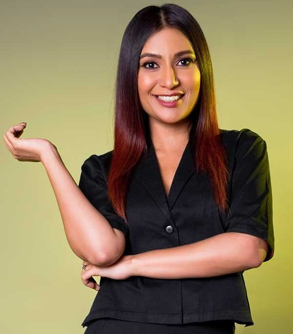

← Back to the founder directory

Malini Agarwal
A radio jockey and former dancer who started a hobby blog in 2008 and grew it into MissMalini, one of India's best-known entertainment and lifestyle media brands, and later co-founded Good Creator Co.
- Born
- 26 May 1977, Allahabad (Prayagraj)
- Country
- India
- Known for
- MissMalini, Good Creator Co.
- Based in
- Mumbai
Early life and education
Malini Agarwal was born in Allahabad, now Prayagraj, in 1977. Her parents worked in the Indian foreign service, so she grew up in several countries, including Greece, Germany and Lebanon. She went to school in Delhi and then studied English Literature at Maitreyi College, Delhi University. She loved dance and theatre, and has said that for years she felt like a misfit who never wanted to be the life of the party.
Dancer, copywriter and radio jockey
After college she joined Ronica Jacob's dance troupe, The Planets, and worked as a backup dancer for several years. At about 21 she moved to Mumbai with roughly ₹40,000, sharing a flat with several roommates. There she worked as a copywriter, though the sources name different employers.
She then began a radio career at Win 94.6, which later became Go 92.5 and then Radio One. Her shows included Horn OK Please, Tiger Time with Malini and Malini till Midnight, and she rose to Programming Director. She later moved into digital television as Channel [V] India's Head of Digital Content, and she also wrote a weekly gossip column, “Malini's Mumbai”, for the Mumbai tabloid Mid-Day.
Starting the blog
When her column was often cut down in editing, a friend suggested she start a blog. Malini has said her first reaction was “What's a blog?” She wrote her first post on 5 May 2008. At that time she was juggling several jobs, and she gave herself one year to make the blog work. As readership grew, she left Channel [V] to focus on it full time. Her husband, Nowshad Rizwanullah, supported her through that decision; they married in February 2012.
Growing MissMalini
MissMalini.com covered Bollywood, television, fashion, beauty and lifestyle, drawing inspiration from international sites such as Perez Hilton and PopSugar. It became the official blogging partner for fashion events such as Lakme Fashion Week, and it later added a media arm, a studio and Girl Tribe by MissMalini, a community and app for women. According to WikiBioStar, she raised angel funding in 2012 to professionalise the site. Wikipedia calls her an entrepreneur whose blog grew into a media company.
She also became a television host, with shows including MissMalini's World on TLC, Inside Access with MissMalini on Vh1, Kya Scene Hai on Zoom and Feet Up With the Stars on Voot, and she guest-anchored shows such as Style Police on UTV Bindass. In 2018, HarperCollins India published her book, To the Moon: How I Blogged My Way to Bollywood, which was reported to have entered the HT-Nielsen non-fiction top ten.
Good Glamm Group and Good Creator Co.
In December 2021, the Good Glamm Group acquired MissMalini Entertainment. The group then combined Plixxo, Winkl, Vidooly, Bulbul and MissMalini's influencer and talent-management arm into Good Creator Co., an influencer platform, and Malini became one of its co-founders. In April 2023 the company launched The Good Creator Show, a podcast hosted by Malini.
Leaving MissMalini
In April 2025, the marketing agency Creativefuel bought MissMalini Entertainment from the Good Glamm Group, reportedly for ₹6 crore, while Good Glamm kept the talent-management arm. In June 2025, Malini announced she was stepping down as creative director, saying she was moving on “to begin a whole new adventure”. She had not said publicly what that would be in the sources used here.
Timeline
- 1977Born on 26 May in Allahabad.
- Late 1990sDances professionally and moves to Mumbai.
- 2008Writes her first blog post on 5 May and starts MissMalini.com.
- 2012Marries Nowshad Rizwanullah in February.
- 2018Publishes To the Moon with HarperCollins India.
- 2021Good Glamm Group acquires MissMalini Entertainment in December.
- 2022Good Creator Co. is launched with Malini as a co-founder.
- 2023Launches The Good Creator Show podcast.
- 2025Creativefuel buys MissMalini Entertainment; Malini steps down in June.
Recognition
- Ranked first on IMPACT's 50 Most Influential Women in Media, Marketing and Advertising (2017)
- GQ's 50 Most Influential Young Indians (2017) and Fortune India's 40 Under 40
- CNBC-TV18 Top 10 Young Businesswomen (2016)
- Global Social Media Icon at Malaysia Social Media Week (2019)
- Cosmopolitan's Editors' Choice Awareness Influencer of the Year (2020)
- India Fashion Awards, Female Digital Entrepreneur and Social Media Personality of the Year (2021)
Leadership lessons
- Start small, even as a hobby. MissMalini began as a blog written alongside several jobs.
- Give an idea a deadline. She gave herself one year to make blogging work.
- Build a community, not just an audience. Girl Tribe grew from her readers.
- Do what you love. She tells young creators to pick the thing they would do even if nobody paid them.
Sources
Written from public information, including Wikipedia, MetaStory, WikiBio and WikiBioStar. The sources differ on some details, such as her early employers and the countries she lived in, so Wikipedia is followed where they differ. Net worth is left out because the figure given by one source is an unsupported estimate.